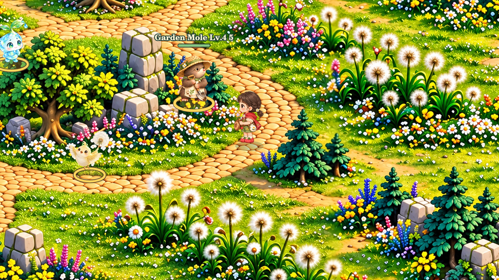
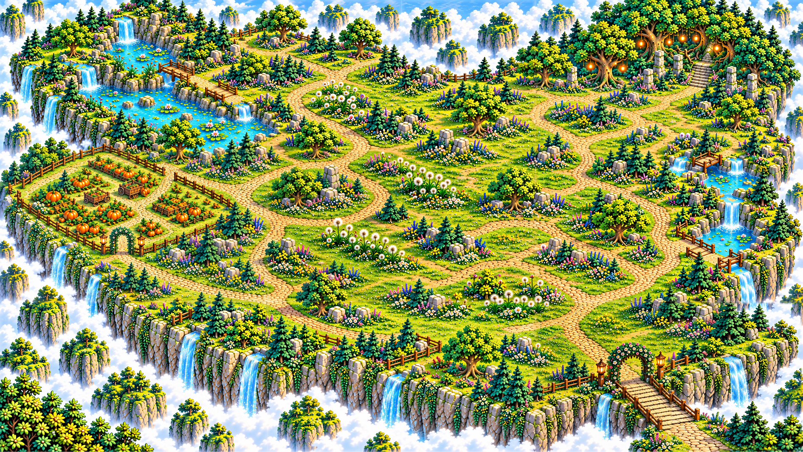

微光星芽谷 · 會呼吸的小生態
v3.18 丘陵細節補繪 ／ 怪物生活動作 ／ 波波鼠縮小 30%
鼴鼠與水精靈，各新增 18 張影格
影片由上而下依序展示：待機、移動、陣亡。實際遊戲會在出生點附近巡遊，進入射程後停下攻擊。
這是實際透明影格的播放展示，並非 Tauri 實機錄影。原有攻擊影格與音效接續使用。
同一位置、同一倍率，切換比較

地圖世界範圍與玩家尺寸不變。18 個補繪片提高近景細節；分區邊緣與原共同邊界融合。場景預覽因環境字型限制使用英文怪名，遊戲仍是中文。
丘陵全景

地圖維持 4728 × 2664 世界單位。近景依視野載入高清片，總覽仍以原底圖快速顯示。
安裝方式請看 README_FIRST.txt。已通過 59 項程式測試；Windows Tauri 實機效能仍需確認。